【滋賀女子旅 Day3】
「八幡堀巡りしてちはやふるの聖地へ」
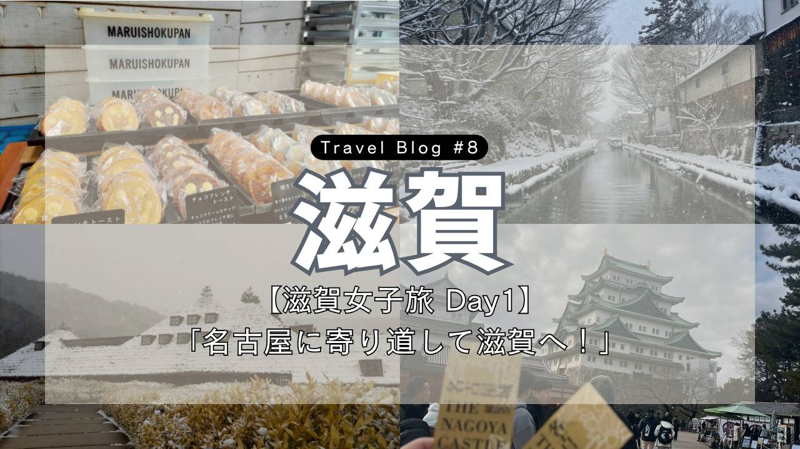
Trip Info
Place 滋賀
Date 2026.02.07〜09
Transport 電車・バス
皆様こんにちは。ミナです。
滋賀旅行最終日の記録です。
深夜バスで帰るので、夜のギリギリまで楽しみ倒しました！
バスに乗って、八幡堀へと向かいます。
朝早く着いたので、まだどこのお店も空いていません。
時間があったので、近くの神社に立ち寄ってみることに。
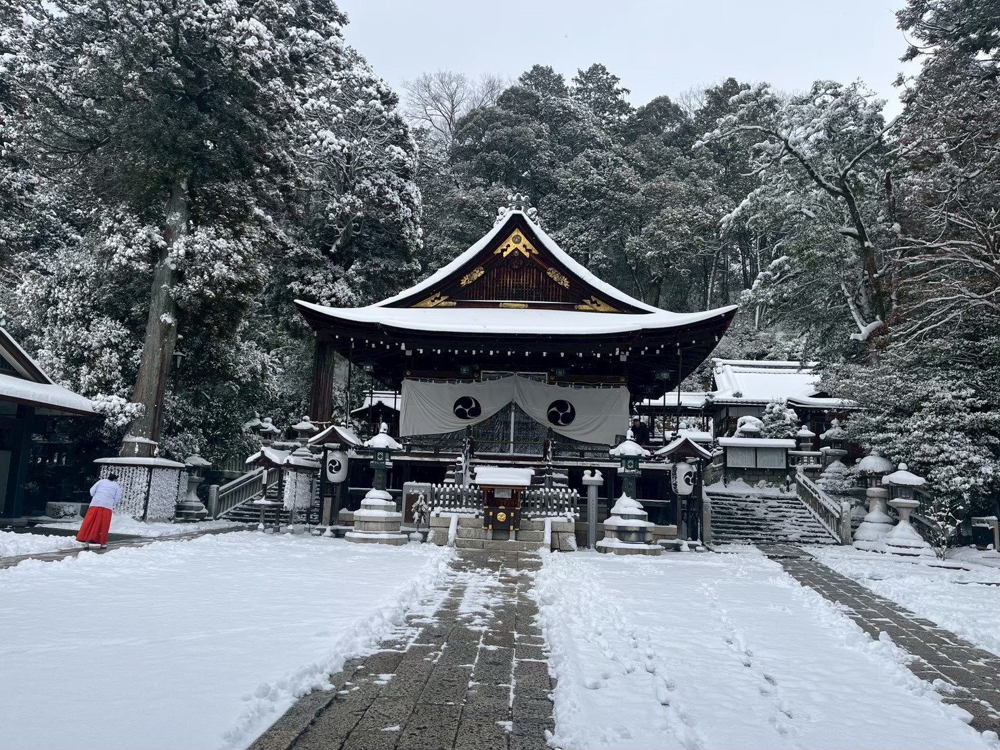
巫女さんが一人いらっしゃる以外は、私たち以外に人もいなかったので、とても静かでした。
この神聖な雰囲気、良いです。
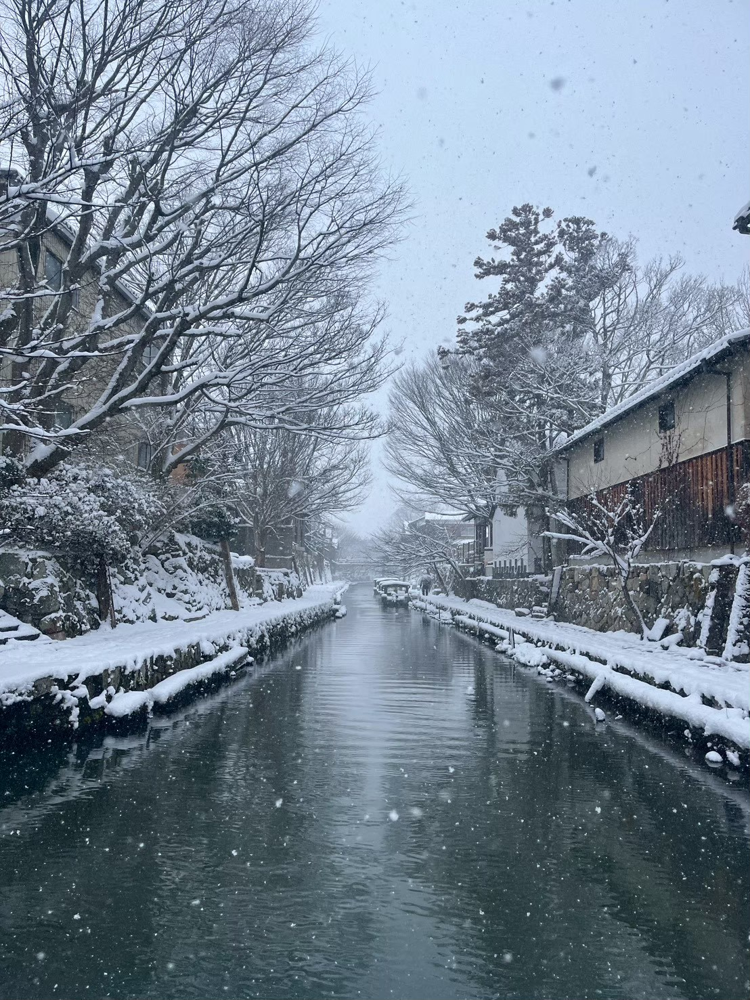
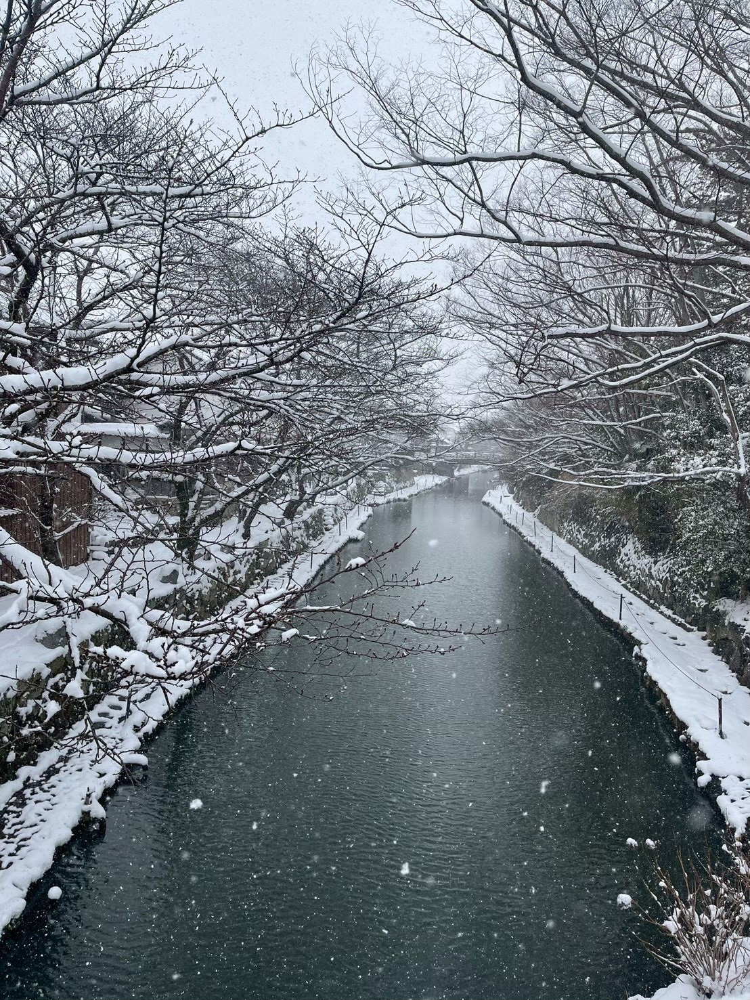
八幡堀周りの風景もめっちゃ良い！
そういえば昨日あたりからうすうす気づいてましたが、滋賀って人が少ないから、めちゃくちゃ穴場な観光地なのでは…！？
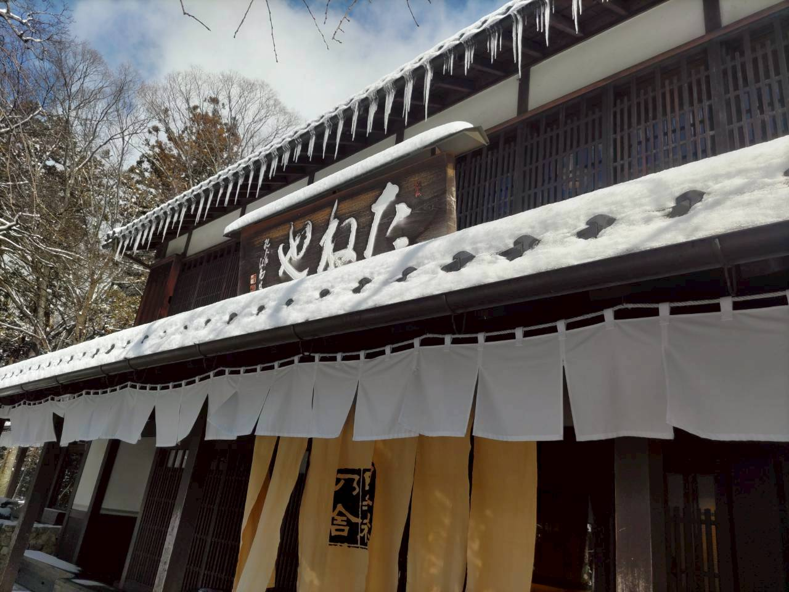
行ってみたかった和菓子のお店に、開店と同時に入店。
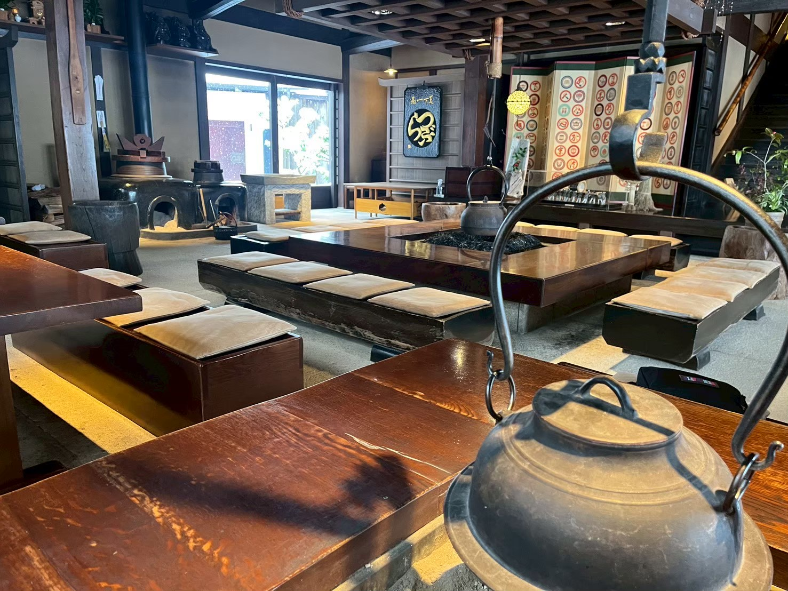
囲炉裏のあるテーブルに座りました。
店内の雰囲気も落ち着く～。
寒くて死んでしまうかと思っていたとこだったので、本当にほっとしていました。
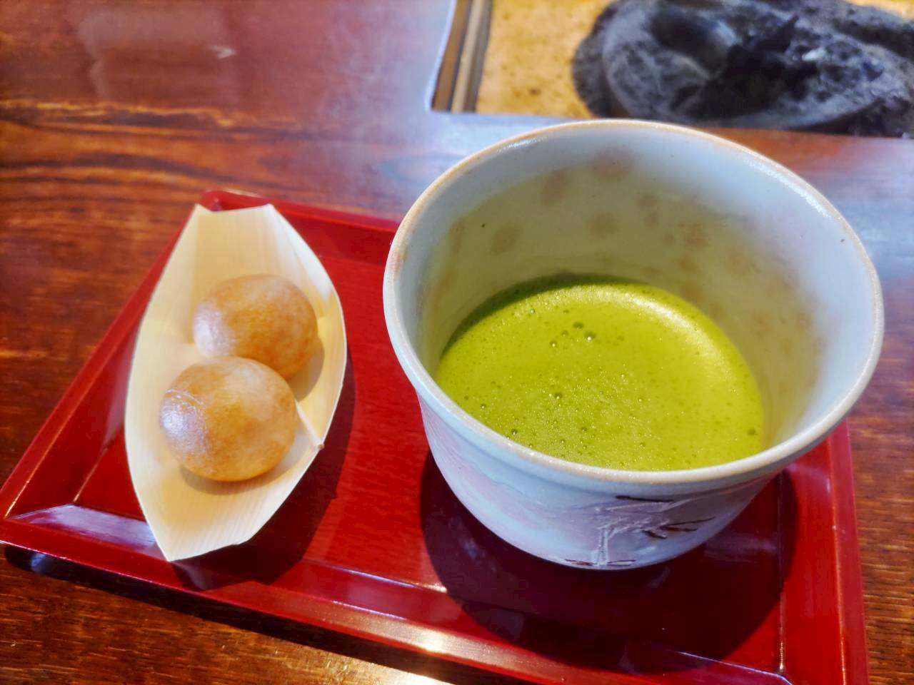
私たちは、つぶら餅と抹茶のセットを注文〈1386円〉
つぶら餅はここ、たねやの名物和菓子です。
上品な甘さのお餅を、表面がすこしカリッとなるくらいまで焼き上げてあるお菓子です。
ちなみにこれ、めちゃくちゃ美味しいです。
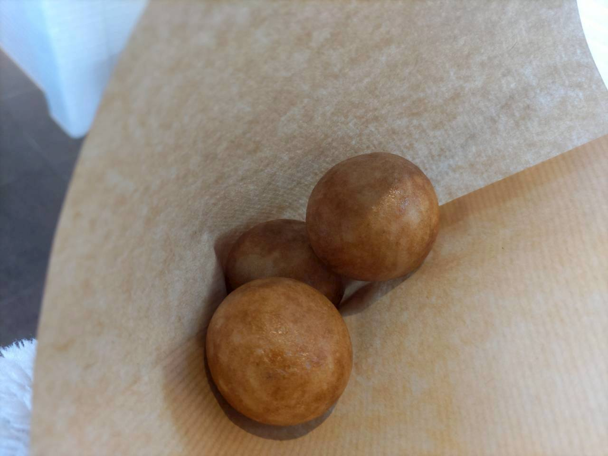
あまりに美味しかったので、テイクアウト用も追加で購入しました笑。
〈お持ち帰り三個入り/421円〉
今日の目玉イベントの「八幡堀めぐり」に行きます。
そもそもここ一帯にはお堀が掘られており、昔は運河として利用されてきたそうです。
なんと琵琶湖にまでつながっているそう。
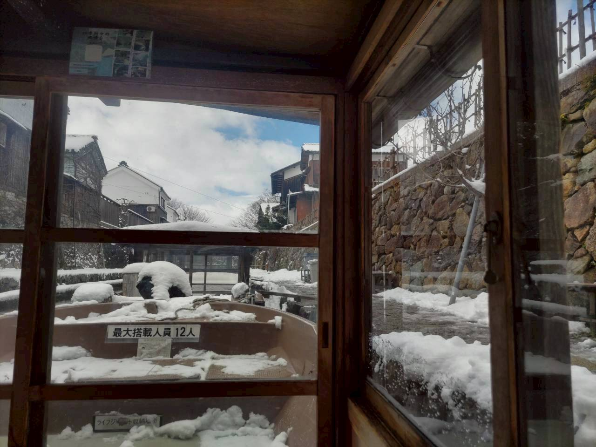
靴を脱いで船に乗ります。
靴下が濡れてしまっていたので、外気にさらされて足が凍りそうでした。
船ではナレーションによる八幡堀の歴史の紹介があり、加えて船頭さんのお話も聞くことができました。
八幡堀は様々な時代劇や映画の撮影地にもなっているようで、見ているだけでわくわくしました。
そういえば最後に、外の靴箱に置いておいた私の靴が凍るというハプニングもありました笑。
履いた瞬間、しゃりっとしたのでびっくりしました。
大津駅に着きました。
ちょうどお昼の時間なので、ご飯を食べます。
駅から本当に近くの、というか隣のお店に入りました。
なんとここ、こたつの席がありました！
凍った靴を履いてきた自分、大歓喜です。
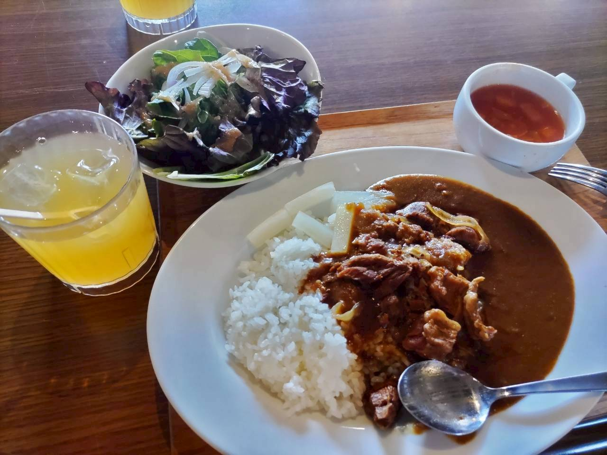
牛すじカレー〈1100円〉を注文。
美味しかったです！
電車に乗って「近江神宮」に。
ここはあの「ちはやふる」の聖地であり、百人一首の名人・クイーン戦の舞台でもあります。
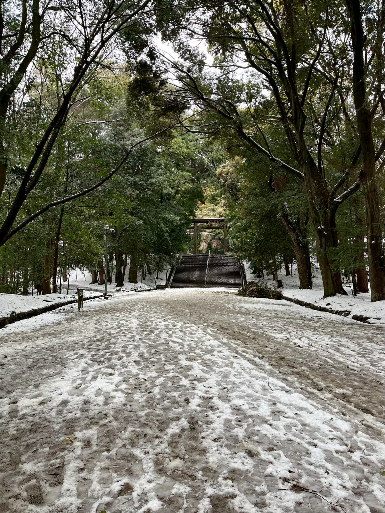
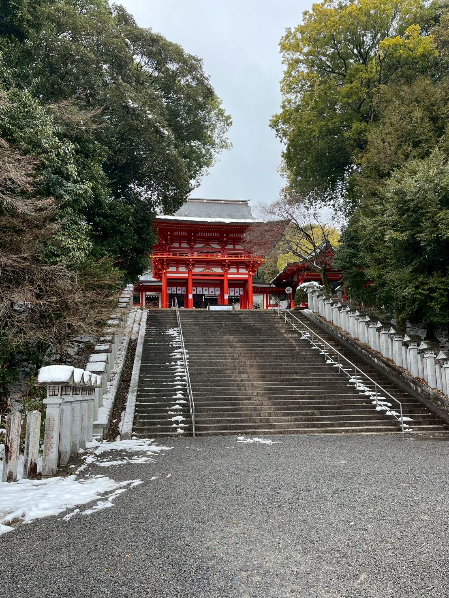
ここでもほとんど人を見かけませんでした。
こんな神聖な雰囲気のある素敵な場所なのに。
ちなみになぜかは分かりませんが、野良？の鶏たちがいました。
先ほどの近江神宮から歩いてここまでやってきました。
近江神宮で買った甘酒をすすりつつ来たら、手がべたべたです。
ちょっと疲れすぎて写真を撮ってなかったです。
どうしてももう一度温泉につかりたい！
というわけで、イオンモール内にある「草津湯本水春」に行きました。
と、その前に夕ご飯を食べ、さすがに凍った靴で夜行バスに乗りたくないので100均でスリッパを買いました。
温泉は様々な種類があって面白かったです。
時間がギリギリでバスまで走ったりもしましたが、最後には夜行バスにも間に合い一件落着です。
ちなみに自分は次の日、そのままディズニーに行って疲れて死にそうになりました(笑)。
今回の旅記録は以上です。
ここまでご覧いただきありがとうございます。
次回のブログも是非見てください♪
ではまた！